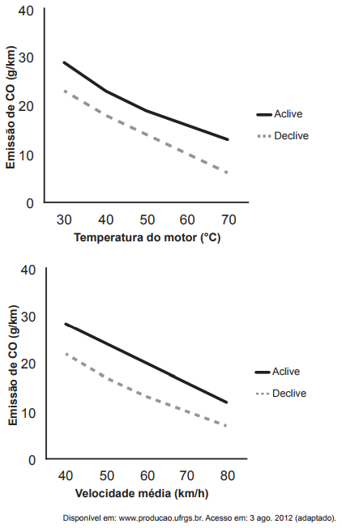

🔹 Ir para Problema 01 | 🔹 Ir para Problema 03
(Enem PPL 2014) Um pesquisador avaliou o efeito da temperatura do motor (em velocidade constante) e da velocidade média de um veículo (com temperatura do motor constante) sobre a emissão de monóxido de carbono (CO) em dois tipos de percurso, aclive e declive, com iguais distâncias percorridas em linha reta. Os resultados são apresentados nas duas figuras.
A partir dos resultados, a situação em que ocorre maior emissão de poluentes é aquela na qual o percurso é feito com o motor
1) Leitura dos gráficos:
Assinale a alternativa correta: